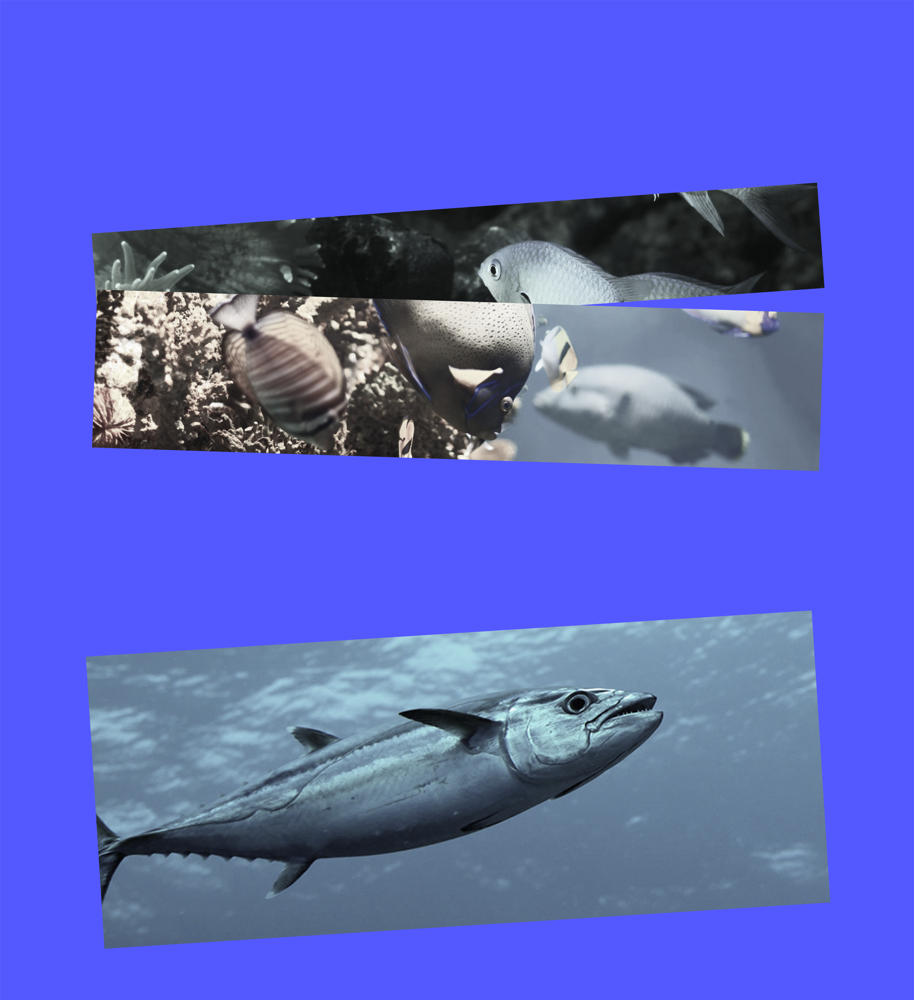

한반도 곳곳에서
어종이 급격하게
바뀌고 있다

지난 53년간 연평균 표층수온은 약 1.2도 내외 상승한
반면, 같은 기간 전 세계 해역 연평균 표층수온은
약 0.53도 상승했다. 즉, 우리나라 해역의 수온 상승률이
전 세계 평균에 비해 약 2배 이상 높게 나타나고 있다.
2023년 봄 우리나라 동해 수온도 관측 이래 42년 만에
가장 높았다. 한국해양과학기술원의 분석 결과 올해 3월부터
5월까지 동해 평균 해면 수온은 10도를 기록했다.
1991년부터 2020년까지 평년 기온보다 1.8도 높게 나타났는데,
봄철 수온이 두 자릿수를 기록한 건 처음이다.
